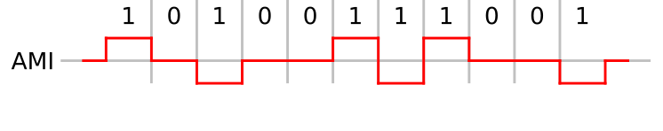

Bipolar Alternate Mark Inversion (Bipolar-AMI) est une technique de codage en ligne qui utilisent des impulsions bipolaires pour représenter les états logiques. C'est un système à 3 niveaux
Un 0 logique est représenté par une absence de symbole, tandis qu'un 1 logique est représenté par une impulsion de polarité alternative. L'utilisation d'un codage alternatif prévient l'apparition d'une composante continue dans le conducteur. Ceci est un avantage non négligeable, car les conducteurs sont souvent utilisés pour transporter une petite quantité de courant pour alimenter les équipements intermédiaires tels que les répéteurs.

une longue suite de 0 ne provoquait pas de changement d'état dans le flux de données (n'autorisant pas une synchronisation suffisamment précise). Les transmissions fiables s'appuient sur le fait que l'utilisateur n'a pas besoin d'envoyer de longues suites de '0'
Le premier 1 commence toujours de maniere positive